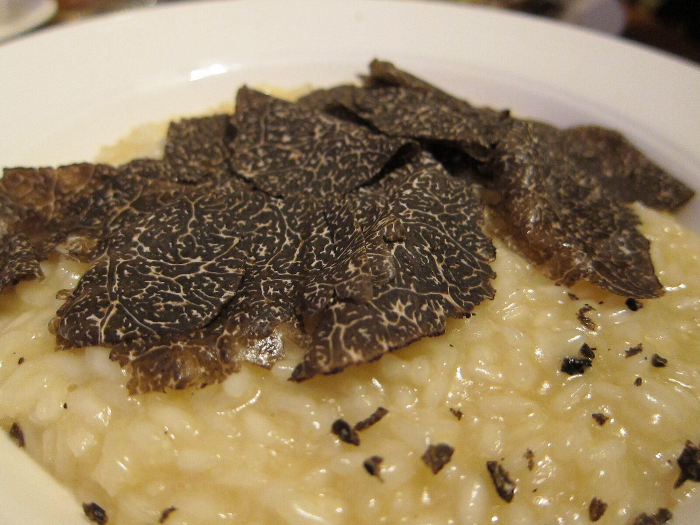

Truffle Mushroom & Parmesan Risotto

Image source: Wikipedia Commons 2025
Description
On this page you will learn to make a deliciously creamy and richly flavoured truffle and parmesan risotto. One of my favourites, the time spent is definitely worth the reward.
Ingredients
- 1 quart chicken broth
- 3 tablespoons butter, divided
- 1 tablespoon olive oil
- ½ medium onion, minced
- 1 ¼ cups Arborio rice
- ½ cup white wine
- ¼ cup hot water, or as needed (Optional)
- ⅓ cup grated Parmesan cheese
- 2 tablespoons chopped fresh parsley, or to taste
- 2 tbsp Cooking oil
- Salt and ground black pepper to taste
Method
- Heat chicken broth in a stockpot over medium-low heat until warmed, 3 to 5 minutes.
- Heat 1 tablespoon butter and olive oil in a large, heavy-bottomed pan until butter melts. Add onion and sauté until translucent, about 2 minutes. Stir in rice until coated, then cook, stirring constantly, until fragrant, about 1 minute.
- Heat 1 tablespoon butter and olive oil in a large, heavy-bottomed pan until butter melts. Add onion and sauté until translucent, about 2 minutes. Stir in rice until coated, then cook, stirring constantly, until fragrant, about 1 minute.
- Heat 1 tablespoon butter and olive oil in a large, heavy-bottomed pan until butter melts. Add onion and sauté until translucent, about 2 minutes. Stir in rice until coated, then cook, stirring constantly, until fragrant, about 1 minute.
Recipe from: All Recipes
Back to home